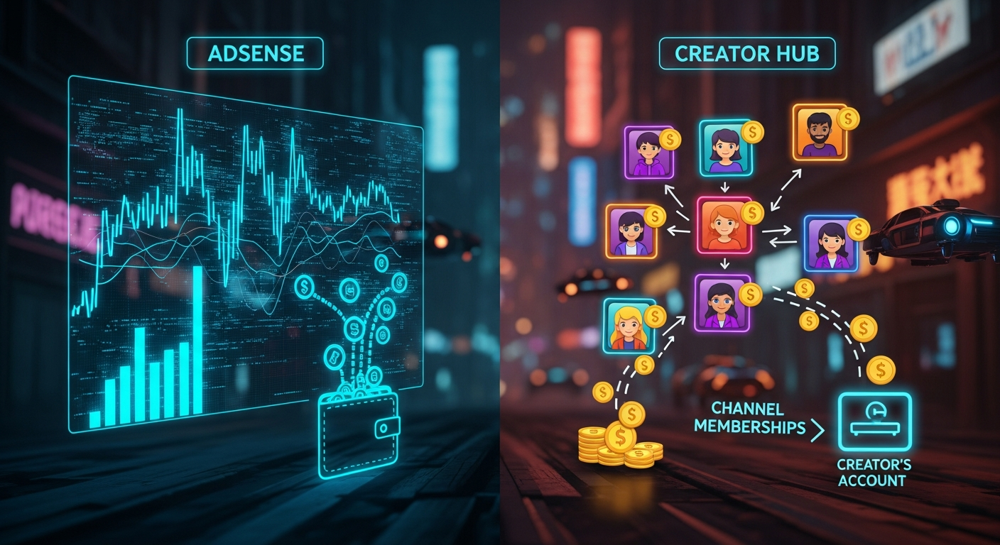

The digital creator economy, particularly on platforms like YouTube, has evolved dramatically, offering myriad pathways for content creators to monetize their passion and hard work. For many, the initial thought of earning income on YouTube immediately conjures images of advertisements playing before, during, or after videos. This is the domain of YouTube AdSense, a foundational pillar of monetization for countless channels across the globe. However, as the platform matured and creators sought more direct and stable revenue streams, YouTube introduced Channel Memberships, a subscription-based model designed to foster deeper community connections and provide a more predictable income. Understanding the fundamental differences, operational mechanics, and strategic implications of these two primary monetization avenues is not merely an academic exercise; it is crucial for any creator aspiring to build a sustainable and thriving career on YouTube. This comprehensive analysis will dissect AdSense revenue and channel memberships income, revealing their intricacies, comparing their advantages and disadvantages, and ultimately guiding creators toward a more informed and powerful monetization strategy.
YouTube AdSense revenue is, for many creators, the entry point into monetizing their content. It operates within a vast, intricate advertising ecosystem where advertisers bid to place their ads on YouTube videos that match their target audience. When a creator enables monetization on their channel and meets YouTube's eligibility criteria, their videos become potential canvases for these advertisements. The revenue generated isn't a fixed sum per view; instead, it's a dynamic figure influenced by numerous factors, making it inherently variable. At its core, AdSense income is derived from two main actions: ad impressions and ad clicks. Advertisers pay YouTube for these actions, and YouTube, in turn, shares a portion of that revenue with the content creator, typically around 55% of the net revenue. This percentage can fluctuate based on specific agreements and regional factors, but 55/45 split (creator/YouTube) is a widely cited benchmark.
Several critical elements dictate how much a creator earns from AdSense. Firstly, the Cost Per Mille (CPM), or Cost Per Thousand views, is a key metric. CPM represents how much advertisers are willing to pay for 1,000 ad impressions. This figure varies wildly based on audience demographics, the niche of the content, the time of year (e.g., higher during holiday seasons), and the ad format. For instance, an educational channel targeting affluent professionals in a developed country might command a much higher CPM than a gaming channel primarily watched by younger audiences in emerging markets. Advertisers pay more for audiences with higher purchasing power or those interested in niche, high-value products and services. Secondly, the ad format plays a significant role. Skippable video ads, non-skippable video ads, bumper ads, overlay ads, and display ads all have different pricing structures and viewer engagement rates. Non-skippable ads, while potentially annoying to viewers, often yield higher revenue because they guarantee an impression. Thirdly, the watch time and viewer retention on a video are paramount. YouTube's algorithm favors videos that keep viewers engaged, as this increases the likelihood of an ad being watched fully or clicked. A video with high watch time provides more opportunities for ads to be shown and for viewers to interact with them, directly impacting overall earnings. Longer videos, if they maintain viewer interest, can host more ad breaks, further boosting potential revenue.
The geographical location of the audience is another major determinant. Viewers from countries with strong economies and high advertising spending (like the United States, Canada, the UK, Australia, and Western Europe) typically generate significantly more AdSense revenue per view compared to viewers from regions with lower advertising budgets. This means a channel with 1 million views primarily from the US might earn substantially more than a channel with 1 million views primarily from India or Brazil, even if the content quality is similar. Furthermore, ad blockers can significantly impact AdSense revenue. If a viewer uses an ad blocker, the ads are not displayed, and thus no revenue is generated for that impression. While creators cannot directly control ad blocker usage, it's an external factor that chips away at potential earnings. Finally, content compliance with advertiser-friendly guidelines is non-negotiable. Videos deemed inappropriate, controversial, or containing sensitive material may be demonetized or receive limited ad placement, severely curtailing their AdSense potential. YouTube's automated systems and human reviewers constantly monitor content, and even minor infractions can lead to reduced ad revenue. In essence, YouTube AdSense is a volume game, where consistent content creation, strong audience engagement, and strategic content niche selection are key to maximizing a highly variable, yet foundational, income stream.
Channel Memberships represent a fundamentally different approach to monetization on YouTube, shifting from an advertising-centric model to a direct-to-creator support system. Instead of relying on advertisers, this model empowers viewers to directly support their favorite creators by paying a recurring monthly fee. In return, members receive exclusive perks and benefits, fostering a deeper sense of community and appreciation. This income stream is voluntary, predicated on a viewer's willingness to pay for added value and to financially back the content they enjoy, making it a powerful indicator of audience loyalty and engagement. Unlike AdSense, which is a share of ad revenue, memberships are a direct subscription, with YouTube taking a 30% cut of the membership fee, leaving the creator with 70% of the net income. This higher percentage for the creator is a significant draw compared to the 55% share from AdSense.
The core of the Channel Memberships model lies in its tiered structure. Creators can set up multiple membership levels, each with its own price point and a corresponding set of exclusive perks. Common tiers might include a basic "Supporter" tier for a low monthly fee, offering custom emojis and badges, up to a premium "VIP" or "Patron" tier for a higher price, which might include early access to videos, exclusive livestreams, members-only polls, Discord roles, behind-the-scenes content, personalized shout-outs, or even direct interaction opportunities. The flexibility to design these tiers and their associated benefits is entirely in the creator's hands, allowing them to tailor offerings to their specific audience and content style. The perceived value of these perks is critical; members are paying for something tangible or experiential that they cannot get as a non-member. This direct transaction creates a more intimate relationship between the creator and their most dedicated fans, transforming passive viewers into active community participants.
The predictability of Channel Memberships income is one of its most compelling advantages. While AdSense revenue fluctuates daily based on ad impressions and market dynamics, membership income, once established, provides a more stable and recurring revenue stream. A member who subscribes for $4.99 a month is expected to renew each month, providing a predictable income unless they cancel. This stability allows creators to plan their content production, invest in better equipment, or even hire assistance with greater confidence. It mitigates the "feast or famine" nature that can sometimes plague AdSense-dependent channels, especially during ad market downturns or holiday lulls. However, building a robust membership base requires consistent effort and strategic communication. Creators must actively promote their membership program, clearly articulate the value proposition of each tier, and consistently deliver on the promised perks. It's not a "set it and forget it" system; maintaining and growing memberships demands ongoing engagement, community management, and a continuous demonstration of appreciation for paying members. This proactive approach ensures members feel valued and continue their subscriptions, making Channel Memberships a powerful engine for sustainable creator income when nurtured effectively.
The fundamental divergence between YouTube AdSense revenue and Channel Memberships income lies not just in their funding sources but profoundly in their mechanisms of generation, stability, and the level of control afforded to the creator. AdSense is a volume-based, passive income model, whereas Channel Memberships are a value-based, active subscription model. This distinction underpins nearly every other difference. AdSense revenue is generated when an advertisement is displayed to a viewer (an impression) or when a viewer interacts with an ad (a click). The creator's role is primarily to produce content that attracts views and watch time, thereby creating opportunities for ads to be shown. The actual revenue per view is outside the creator's direct control, influenced by factors like advertiser budgets, seasonal demand, audience demographics, and the type of content. It's a system where the creator is compensated for delivering an audience to advertisers. This makes AdSense earnings inherently volatile; a sudden drop in views, a change in YouTube's algorithm, a shift in advertiser spending, or even seasonal ad rate fluctuations can lead to significant and unpredictable swings in income.
Channel Memberships, conversely, generate revenue through direct, recurring subscriptions from viewers. The income is tied to the number of active members and the price of their chosen tier. Creators directly set the pricing and the perks, giving them substantial control over the value proposition and, consequently, the potential income. This model shifts the focus from attracting a broad, anonymous audience for advertisers to cultivating a dedicated community willing to pay for exclusive access and to support the creator directly. The stability of membership income is a major advantage. Once a viewer becomes a member, their monthly subscription provides a predictable income stream until they choose to cancel. This recurring nature allows for far better financial planning and enables creators to invest in their channel with greater confidence. While members can cancel at any time, the churn rate is often lower among highly engaged fans who value the perks and the connection with the creator. Building a membership base is about relationship management and consistently delivering on promises, rather than chasing algorithmic trends or advertiser whims.
Another crucial difference is the revenue share. YouTube typically shares around 55% of the net ad revenue with creators for AdSense. This means for every dollar advertisers pay, the creator receives approximately 55 cents. For Channel Memberships, YouTube's cut is 30%, leaving creators with a more substantial 70% of the membership fee. This higher percentage per dollar earned makes memberships a more efficient form of monetization on a per-subscriber basis. A single $5 member often generates more net income for a creator than hundreds or even thousands of AdSense-generated views, depending on the CPM. This highlights a strategic choice: pursue massive scale for AdSense, or cultivate deep loyalty for memberships. Furthermore, the relationship with the audience differs profoundly. AdSense often positions viewers as a commodity, an audience to be delivered to advertisers. Memberships, however, foster a partnership, where viewers become patrons and active participants in the channel's journey. This deeper connection can lead to increased engagement, valuable feedback, and a more resilient community, which in turn can indirectly benefit AdSense revenue by increasing watch time and loyalty. Ultimately, AdSense is about monetizing attention at scale, while memberships are about monetizing affinity and loyalty with a dedicated segment of the audience.
The degree of control a creator wields over their monetization strategy and the nature of their relationship with their audience differ fundamentally between AdSense and Channel Memberships, profoundly impacting long-term channel growth and sustainability. With YouTube AdSense, creator control is relatively limited. While a creator can enable or disable ads on their videos, choose certain ad formats, and even restrict categories of ads, the core elements like CPM rates, specific advertisers, and the ultimate revenue generated per view are largely outside their direct influence. These factors are dictated by the broader advertising market, YouTube’s algorithms, and advertiser bidding strategies. A creator’s primary control lies in producing content that is advertiser-friendly and appeals to a demographic that advertisers value. This often means tailoring content, consciously or unconsciously, to fit within advertiser guidelines, which can sometimes stifle creative freedom or push creators towards more mainstream, less controversial topics to ensure maximum monetization potential. The relationship with the audience in an AdSense model is often transactional and somewhat detached; viewers consume content, ads are displayed, and the creator earns. There's little direct interaction or value exchange beyond the content itself.
Turn your scripts into professional videos automatically. Use code PAVEL20 for 20% OFF!
START CREATING WITH PICTORYChannel Memberships, in stark contrast, place a significant amount of control directly into the creator’s hands. Creators define the tiers, set the pricing for each tier, and design the exclusive perks that members receive. This empowers them to tailor their offerings precisely to their audience's desires and their own capacity to deliver. If a creator wants to offer a high-value tier with personalized video responses, they can. If they prefer a lower-cost tier focused on emojis and badges, that’s also an option. This flexibility allows for a highly customized monetization approach that aligns with the channel’s brand and the creator’s personal style. Furthermore, the creator directly manages the value proposition; if members feel they are getting excellent value, they are more likely to subscribe and remain members. If the value proposition falters, creators can adjust their perks or communicate more effectively to retain members. This direct influence over income generation fosters a more entrepreneurial mindset, where creators are actively managing a subscription business rather than passively receiving ad revenue.
The audience relationship forged through Channel Memberships is also profoundly different and often far more robust. Members are not just viewers; they are patrons, supporters, and often, a core community. They have chosen to invest financially in the creator and their work. This creates a stronger bond, a sense of shared ownership, and a more engaged community. Creators can leverage this relationship for valuable feedback, involving members in content decisions through polls, or even collaborating on projects. This deeper engagement can lead to a more loyal audience, which in turn can indirectly benefit AdSense revenue through increased watch time and repeat viewership from a highly dedicated fan base. Strategically, an AdSense-only approach focuses on maximizing reach and views, often through viral content or broad appeal. A membership-focused strategy, however, prioritizes depth of engagement and community building over sheer volume. Many successful creators adopt a hybrid strategy, using AdSense to monetize their broader audience and attract new viewers, while simultaneously cultivating a dedicated core of paying members for more stable and direct support. This dual approach allows for both expansive reach and deep community engagement, creating a more resilient and diversified income portfolio.
Effective monetization on YouTube, whether through AdSense or Channel Memberships, is inextricably linked to a deep understanding and strategic application of analytics. Both models require creators to meticulously track performance, identify trends, and continuously optimize their content and strategies to maximize earnings. However, the specific metrics analyzed and the optimization tactics employed differ significantly, reflecting the distinct nature of each revenue stream. For YouTube AdSense, the primary analytical focus revolves around viewership, audience retention, and ad performance metrics. Creators need to dive into YouTube Analytics to understand which videos are generating the most views, where their audience is coming from, and critically, how long viewers are watching. Key metrics include total watch time, average view duration, click-through rate (CTR), and impressions. A high average view duration directly correlates with more opportunities for ads to be shown and completed, thereby increasing AdSense revenue. Creators must identify patterns in their content that lead to higher retention and replicate those successes. This might involve refining video pacing, improving intros and outros, or experimenting with different content formats that keep viewers hooked.
Beyond general viewership, AdSense optimization requires a closer look at revenue-specific metrics like Estimated Monetized Playbacks, Playback-based CPM (Cost Per Mille), and Ad Type performance. Understanding Playback-based CPM helps creators gauge the value of their audience to advertisers. If CPM is low, it might indicate that their audience is less attractive to high-paying advertisers, prompting a strategic shift in content niche or targeting. Creators can also experiment with ad placement, particularly for mid-roll ads in longer videos. YouTube's automatic ad placement is a starting point, but manually placing ads at natural breaks in content can improve ad completion rates and reduce viewer fatigue, potentially boosting revenue without alienating the audience. Analyzing traffic sources is also vital; for instance, if a significant portion of views comes from embedded players on external sites that don't support ads, AdSense revenue will be lower for those views. Optimization for AdSense is an ongoing process of A/B testing video titles and thumbnails to improve CTR, refining content to boost watch time, and understanding audience demographics to attract higher-paying advertisers.
For Channel Memberships, the analytics focus shifts from broad viewership to community engagement, conversion rates, and member retention. Creators need to track the number of new members, total active members, membership tier distribution, and crucially, the churn rate (the percentage of members who cancel their subscription). YouTube Analytics provides specific data on memberships, allowing creators to see which videos or community posts are driving new sign-ups, helping them understand what content or calls-to-action are most effective. Monitoring member feedback, both through direct comments and through engagement with members-only content, is paramount. If a particular perk is consistently underutilized, it might be a candidate for removal or replacement. Conversely, high engagement with certain exclusive content indicates its value to members and suggests areas for further development. Retention analytics are particularly important; a high churn rate indicates that members are not finding sufficient ongoing value to justify their recurring payment. This necessitates a review of perks, communication strategies, and the overall value proposition. Creators might experiment with new exclusive content, more frequent member interactions, or special events to re-engage members and reduce churn. Ultimately, optimizing for memberships is about building and nurturing a loyal community, continuously delivering exclusive value, and fostering a strong sense of belonging, all guided by specific membership-centric data.
Maximizing earnings from both YouTube AdSense and Channel Memberships involves leveraging a suite of tools and platforms, ranging from YouTube's native analytics to third-party services designed to enhance content, engagement, and financial management. Understanding and utilizing these solutions effectively can significantly amplify a creator's monetization potential. For AdSense optimization, the primary tool is, of course, YouTube Analytics itself. This robust platform provides creators with an unparalleled view into their audience demographics, watch time, traffic sources, audience retention graphs, and estimated AdSense revenue. Creators should regularly delve into the "Revenue" tab to track CPM, RPM (Revenue Per Mille), and identify which videos are performing best financially. The "Audience" tab helps in understanding who is watching, which is crucial for targeting higher-value advertisers. Beyond native analytics, tools like TubeBuddy and VidIQ offer advanced features for SEO research, keyword optimization, competitive analysis, and tag suggestions, all of which indirectly boost AdSense revenue by improving video discoverability and watch time. These tools can help identify trending topics, analyze competitor strategies, and suggest optimal titles and descriptions to attract more viewers, thereby increasing ad impressions and potential earnings. Furthermore, external ad placement analysis tools, while not directly integrated with YouTube, can help creators understand broader advertising trends that influence CPM rates.
When it comes to Channel Memberships, while YouTube Analytics again provides essential data on member count, churn, and tier distribution, additional tools focus on community building and perk delivery. For managing exclusive content and direct member interaction, platforms like Discord are indispensable. Many creators set up members-only channels on Discord, providing a private space for community interaction, Q&A sessions, and exclusive announcements. Tools like Patreon, while a separate platform, often serve as a complementary model for creators who want even more control over their subscription tiers and direct communication with supporters, sometimes offering benefits that YouTube's native memberships don't fully cover (e.g., physical merchandise fulfillment). For creators offering digital perks, services like Gumroad or Sellfy can be used to distribute exclusive downloads (e.g., wallpapers, presets, templates) to members, integrating with their membership verification process. For personalized shout-outs or video messages, tools like Cameo, while not directly tied to YouTube memberships, represent another avenue for premium fan interaction that can be offered as a high-tier perk.
Financial management and tax preparation tools are also crucial for both income streams. Platforms like QuickBooks Self-Employed or Wave Accounting help creators track income and expenses, manage invoices (for sponsorships, which can be a complementary income stream), and prepare for tax season. Understanding the flow of funds from AdSense (paid monthly via Google AdSense account) and memberships (paid monthly via YouTube's payment system) is essential for accurate bookkeeping. Additionally, tools for content creation and streaming can indirectly boost both AdSense and membership income. High-quality video editing software (e.g., Adobe Premiere Pro, DaVinci Resolve), reliable streaming software (e.g., OBS Studio, Streamlabs OBS), and professional audio equipment contribute to a better viewer experience, leading to higher engagement, more views (AdSense), and a greater likelihood of converting viewers into paying members. Ultimately, a holistic approach combining robust analytics, strategic content optimization, effective community management, and sound financial practices, supported by the right tools, is the key to unlocking maximum earning potential on YouTube.
For many successful YouTube creators, the most resilient and lucrative monetization strategy isn't an either/or proposition between AdSense and Channel Memberships, but rather a sophisticated hybrid approach that leverages the strengths of both. This integrated strategy allows creators to diversify their income streams, reduce financial vulnerability, and build a more robust, sustainable business model on the platform. AdSense serves as the foundational layer, providing a baseline income that scales with overall viewership and reach. It's the primary engine for monetizing the vast majority of a creator's audience – the casual viewers, the new discoverers, and those who simply prefer not to pay for content. By consistently producing high-quality, engaging content that attracts broad viewership, creators can maintain a steady flow of AdSense revenue. This allows them to fund basic operations, invest in new equipment, or simply cover living expenses, without solely relying on the dedicated support of a smaller, paying audience... and implement these strategies to ensure long-term success.
In summary, staying ahead of these trends is the key to business longevity and security. By following this guide, you maximize your growth and ensure a stable digital future.
Don't wait for the headlines. Our Private Telegram Channel delivers real-time AI security updates and digital wealth strategies before they go viral. Stay protected. Stay ahead.
⚡ JOIN THE 1% NOW